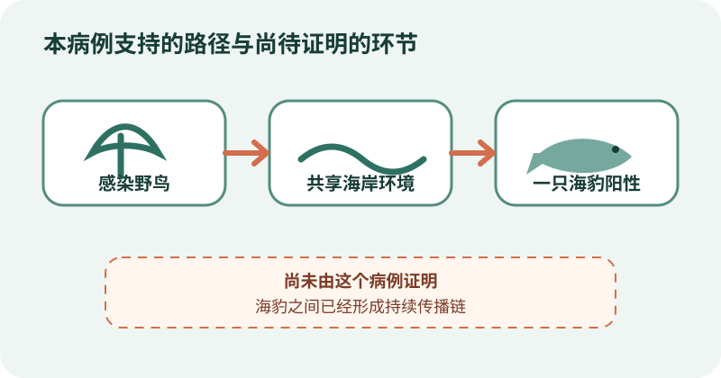
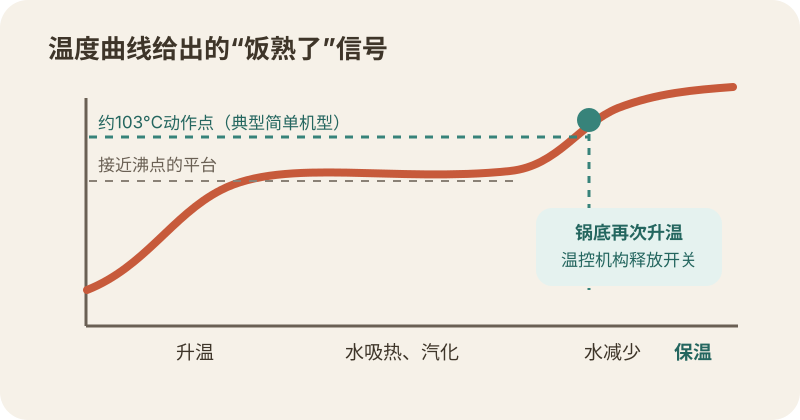
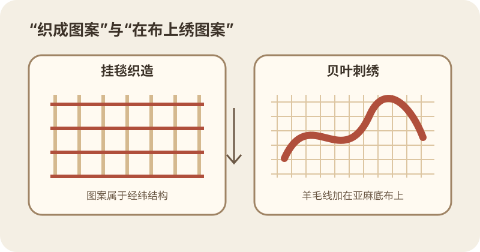
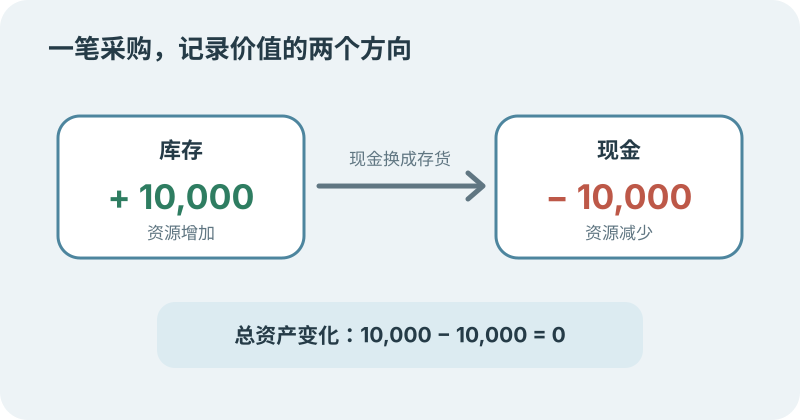

今日热点 01 · 金融 / 消费
六大行更新消费贷贴息：单家银行每年上限升至5000元
财政部、中国人民银行、金融监管总局的新通知自8月1日起施行。8月21日至22日，六家国有大行陆续更新细则：个人消费贷款和信用卡分期合计贴息上限提高，信用卡支持范围也从账单分期扩到更多分期产品。
发生了什么
5000元是单人在单家银行的年度累计上限
三部门通知把每名借款人在单家经办机构可享受的个人消费贷款和信用卡分期累计贴息上限，由每年3000元提高到5000元。政策日期追溯到2026年8月1日，不是从银行公告当天才开始计算。
工行、农行、中行、建行、交行和邮储随后发布实施说明。以中国银行为例，已经完成贴息申请的贷款无需重签协议，系统会自动套用新上限；不同银行、不同信用卡产品的签约和补贴息办法仍应看各自公告。
范围扩大到哪里
信用卡专项分期、消费分期和预借现金分期都被纳入
今年1月，政策先把信用卡账单分期纳入支持。此次又加入新发生的信用卡专项分期、消费分期、预借现金分期等业务，汽车和装修等原本常走专项分期的消费因此能进入政策范围。
能否贴息仍要经过银行识别。真实、合规的消费才符合条件；虚构交易、资金转去非消费用途、退款或逾期，都可能不予贴息或追回已经扣减的资金。
省多少钱
年贴息1个百分点，不等于借款利率直接变成1%
信用卡分期贴息比例为年化1个百分点，同时不超过相应分期折算年化利率的50%。假设一笔符合条件的10万元本金整整占用一年，1个百分点大约对应1000元；等额还款会让余额逐月下降，实际贴息也会更少。
5000元是封顶额，不是每个借款人都会拿满。最终金额取决于合格本金、占用天数、还款方式和银行识别结果，个人消费贷款与信用卡分期还要共享同一家银行的年度额度。
借之前还要看什么
财政替你付一部分利息，剩下的利息和还款义务仍在
贴息降低的是借款成本，并没有把消费贷款变成补贴现金。比较方案时仍要看综合融资成本、总还款额、提前还款规则和逾期后果，不能只看“最高省5000元”。
如果本来不需要分期，为拿贴息新增长期债务，节省的利息可能小于冲动消费和资金占用的代价。最实用的步骤是先在银行官方渠道核对产品是否参与、是否需要签约，再算完整账单。
消费贷与信用卡分期在单家银行共享每年5000元贴息上限；贴息按合格本金和期限计算，不是人人直接领取5000元。
查看事实与延伸来源
三部门通知全文：信用卡分期扩围、贴息上限和施行日期
中国银行答疑：旧申请自动套用新上限
新华财经：六大行细则与信用卡分期支持范围
21世纪经济报道：六家国有大行落地进度与产品规则
今日热点 02 · 体育 / 赛事
诺里斯赢下最后一届F1荷兰大奖赛，维斯塔潘首圈退赛
8月23日，兰多·诺里斯在赞德沃特从杆位出发，最终领先安德烈亚·基米·安东内利11.536秒夺冠。主场车手马克斯·维斯塔潘在首圈撞墙退赛；赛后，这条赛道也完成了当前合同下的最后一场F1。
比赛怎么结束
诺里斯重新超越安东内利，拿到赛季第二场连胜
诺里斯起步守住第一，但比赛因维斯塔潘首圈事故出示红旗。重新发车后，安东内利抢到领先并一度拉开差距；进入最后三分之一赛程，诺里斯追上并完成反超。
一场迟来的虚拟安全车让安东内利换上新胎追击，梅赛德斯也把他调到队友乔治·拉塞尔前面。诺里斯没有再被接近，跑完72圈后夺冠；安东内利和拉塞尔分列第二、第三。
主角为何早退
维斯塔潘没跑完一圈，事故让告别赛少了主场对决
维斯塔潘在第一圈最后一个弯失去赛车尾部，高速撞上护墙。F1随后确认他身体无碍，但比赛就此结束。对看台上的荷兰观众来说，这也意味着主场车手没有机会完成赞德沃特的最后一场正赛。
他的退赛与赛事停办是两件事。前者是单场事故，后者早在2024年就已决定，不能把一次撞车解释成荷兰大奖赛离开赛历的原因。
为什么是最后一届
民营主办方权衡商业风险后决定在高点收尾
F1与荷兰站主办方在2024年把合同延长一年，同时确认2026年后不再续办。F1说双方讨论过每年举办和轮换举办等方案，最后尊重主办方退出的决定。
主办方说明，赛事由私营团队拥有和运营，继续举办的机会必须与风险和责任一起衡量。赞德沃特从2021年重返赛历，现场人气很高；受欢迎并不自动等于一项大型赛事能长期承担成本与风险。
告别并非永久保证
当前合同结束，不等于荷兰永远不会再办F1
官方把2026年称为最后一届荷兰大奖赛，准确含义是现有安排到此结束。未来若出现新的主办方、商业条件或赛历空间，赛事仍可能回归；今天没有这样的新协议。
因此，这场比赛留下两条记录：诺里斯赢得赞德沃特当前周期的收官战，维斯塔潘则在自己的主场首圈退赛。至于赛道以后是否重返F1，要等新的合同事实。
诺里斯赢下赞德沃特当前合同下的最后一场F1；荷兰站离开赛历是主办方早已作出的商业决定，不是维斯塔潘事故造成的。
查看事实与延伸来源
F1官方赛报：红旗、反超、领奖台与完赛差距
F1官方：2026年为最终一届及主办方退出说明
《卫报》赛报：诺里斯、安东内利与维斯塔潘事故
今日热点 03 · 健康 / 野生动物
澳大利亚首次确认本土哺乳动物感染H5禽流感
南澳大利亚州8月23日确认，一只死于比奇波特附近的长鼻毛皮海豹检出H5禽流感。这是澳大利亚首次在本土哺乳动物中确认该病毒；现有证据仍指向单只动物接触受感染鸟类或共享环境。

目前确认的是一只海豹感染；从鸟类或环境暴露到海豹的路径较可能，海豹之间持续传播尚未由本病例证明。原创示意，不按比例。
实验室确认了什么
一只无外伤死亡的海豹检出H5，南澳累计194个阳性事件
这只长鼻毛皮海豹8月19日被公众发现并上报，州级初检结果不明确，样本随后送往澳大利亚疾病防范中心复核。8月23日，实验室确认H5禽流感阳性。
南澳当天还确认多种海鸟的新事件，累计报告194个H5阳性事件。这里的“事件”可能涉及一只或多只动物，不能把194直接读成194只感染动物。
为什么会跨到哺乳动物
海豹与海鸟共享海岸环境，感染不必先发生海豹间传播
联邦农业部长表示，这只海豹更可能因接触受感染野鸟或双方共享的环境而感染。海鸟粪便、尸体和被污染的水岸，都能把病毒带到海洋哺乳动物附近。
这次结果说明病毒越过了物种边界，却没有单独证明海豹之间已经持续传播。判断种群传播需要更多病例的时间、地点、基因序列和接触关系，不能从一只阳性动物直接跳到结论。
风险落在哪里
眼前最直接的威胁是野生动物，不是家禽或普通人的日常接触
澳大利亚联邦环境部门指出，H5N1已在海外造成大量野鸟和野生哺乳动物死亡。繁殖地集中、数量本就有限的物种更脆弱，一旦病毒进入群体，局部死亡可能迅速放大。
截至通报，澳大利亚家禽和其他家畜没有检出，公共卫生部门仍把人类风险评为低。这个判断不等于零风险，含义是普通人没有因这一个病例就面临新的普遍暴露。
公众该怎么做
不要触碰病死野生动物，记录位置并交给专业人员取样
南澳政府要求公众与病死鸟类、海豹等野生动物保持距离，记录时间和地点后报告。自行搬动或救助会增加接触，也可能把污染带到别处。
接下来最值得看的是同一海岸或繁殖地是否出现更多哺乳动物病例，以及病毒基因是否显示共同传播链。病例数量和序列证据，会比“首次跨物种”这个标题更能判断风险。
澳大利亚确认的是首只本土哺乳动物H5阳性；它说明跨物种感染已发生，但尚不能证明海豹间持续传播，人类风险目前仍评为低。
查看事实与延伸来源
南澳政府8月23日检测通报：海豹、事件数与公众建议
ABC：联邦部长说明可能的鸟类或环境暴露路径
澳大利亚联邦环境部门：野生动物风险与当前人类风险
涉猎 01 · 厨房 / 热学
电饭煲怎样知道饭煮好了：它等的是锅底温度再次上升
传统电饭煲不会尝米饭，也不必预先知道放了几杯米。只要锅里还有较多液态水，温度就被沸腾过程压在接近沸点；水被米吸收并逐渐蒸发后，锅底才会明显升温，触发从煮饭切到保温。

水仍充足时，加入的热主要用于汽化；水减少后锅底温度越过阈值，温控机构切到保温。原创示意，温度和时间不按比例。
水先充当温度标尺
沸腾时继续加热，锅内温度也不会立刻一路上升
常压下，水接近沸点后，继续获得的热量主要用来让液态水变成水蒸气。只要锅底仍被含水的米饭充分接触，温度就会停留在一个相对稳定的区间。
米量和水量会改变煮饭所需时间，却不改变这个信号：水还在，锅底难以迅速越过沸点附近；水被吸收和蒸发后，金属锅胆才更快升温。
跳闸靠什么
简单机型用温控开关，越过阈值就释放煮饭按钮
传统机型在内锅底部设置温控机构。专利资料常见约103摄氏度附近的动作点：温度到达阈值后，磁性或机械保持力改变，弹簧释放开关，主加热回路断开。
这就是老式电饭煲“咔哒”一声跳起的原因。随后功率较低的保温回路间歇工作，把温度维持在适合保温、又不继续猛烈煮饭的范围。
现代机型更复杂
多传感器和程序能分阶段调功率，但仍在读温度曲线
带微电脑或IH加热的电饭煲会把浸泡、升温、沸腾、焖饭分成不同阶段，并用底部、顶部传感器和预设程序调节功率。它们不再只有一个机械阈值。
核心线索没有消失：控制器仍从温度上升速度、蒸汽和时间判断水分状态。功能越多，越不能把所有电饭煲都概括成同一枚磁钢开关。
传统电饭煲利用水沸腾时的温度平台，等锅底再次升温后切断主加热并转入保温，并不直接识别米饭熟度。
查看事实与延伸来源
史密森学会藏品：早期电饭煲的双层结构与温控停机
东芝产品史：1955年日本首台自动式电饭煲
电饭煲加热回路专利：水存在时的温度平台与自动切换
涉猎 02 · 艺术 / 中世纪史
贝叶挂毯其实不是挂毯：故事是用羊毛线绣在亚麻布上的
这件约70米长的11世纪作品讲述1066年诺曼征服前后的事件，却没有把图案织进布的结构。工匠先有亚麻底布，再用羊毛线把人物、船只、文字和边饰缝上去；按工艺分类，它是一幅叙事刺绣。

挂毯织造让图案成为经纬结构的一部分；贝叶作品是在已经织好的亚麻布上加羊毛绣线。原创示意，不复原具体历史画面。
名字错在工艺
挂毯是织出来的，贝叶作品的图像是后来绣上去的
挂毯织造在经线和纬线交错时形成图案，图像就是织物结构。贝叶作品先有一块亚麻织物，工匠再以羊毛线用轮廓绣和铺线绣等针法添加画面。
名称沿用至今，并不妨碍博物馆把工艺说准。贝叶博物馆给出的现存长度约68.3米，宽约70厘米；作品末端缺失，因此今天看到的并非完整结尾。
它讲了什么
连续画面把王位争议、渡海和黑斯廷斯战役缝成一条长叙事
作品从英王爱德华、哈罗德与诺曼底公爵威廉之间的继承争议讲起，经过宣誓、造船、渡海，抵达1066年10月的黑斯廷斯战役。人物旁的拉丁文短句帮助观众辨认场景。
它像一卷展开的分镜，但不能当成中立录像。画面强调威廉取得王位的正当性；历史学家会把它与编年史、文书和考古证据并读，而不是把每一针都当作唯一事实。
谁做的仍不确定
主使者和制作地点有主流推测，却没有同时代制作档案定案
一种常见判断认为，威廉同母异父兄弟、贝叶主教奥多可能委托制作，作品也可能在英格兰南部完成。奥多在画面中多次出现，这为推测提供了线索。
联合国教科文组织申报资料同时提醒：没有同时代文件明确记录委托、工坊和制作者。把“很可能”写成“确定由某群女性或修女完成”，会越过现有证据。
贝叶挂毯按工艺应叫刺绣：羊毛图案绣在亚麻底布上；它是理解1066年的重要材料，也带着胜利者的叙事立场。
查看事实与延伸来源
贝叶博物馆：尺寸、底布、绣线与针法
英国博物馆：1066叙事与2026—2027展出资料
联合国教科文组织申报档案：制作来源的不确定性与历史信息
涉猎 03 · 会计 / 制度
复式记账为什么每笔交易要记两边：它在追踪价值去了哪里
一家公司花1万元现金买库存，钱少了，库存多了；经济资源没有凭空消失，只是换了形态。复式记账把这两个变化同时写进不同账户，使资产、负债和所有者权益之间的关系能持续核对。

示例中库存增加1万元、现金减少1万元，两边同时记录；总资产没有因采购本身改变。原创示意。
先看一笔采购
同一件事改变两个账户，金额没有被重复计算
用现金买库存时，库存账户增加，现金账户减少。会计用借方和贷方记录这两个方向；“借”和“贷”在这里是位置与规则，不等于日常语言里的借钱和放贷。
如果向供应商赊购，库存增加的同时，应付账款也增加。交易的第二边会随资金来源改变，这正是复式记账要保存的信息：资源来自哪里，又变成了什么。
为什么能自检
借贷合计必须相等，漏记一边通常会让试算表失衡
每笔分录的借方金额与贷方金额相等，全部账户汇总后也应保持平衡。若只记库存增加、忘了现金减少，借贷合计就对不上，错误会暴露出来。
平衡并不保证账一定真实。把1万元同时错记到两个错误账户，或虚构一笔借贷相等的交易，试算表仍可能平衡。复式结构提供校验线索，不能替代凭证、盘点和审计。
帕乔利做了什么
他没有发明复式记账，却在1494年给出首部印刷说明
意大利商人在帕乔利之前已经使用成体系的复式账簿。1494年，他在威尼斯出版《算术、几何、比与比例概要》，其中一章系统说明商人怎样使用日记账、分类账和借贷记录。
印刷让一套地方商业实践更容易被学习、复制和检查。后来的公司会计远比15世纪复杂，但资产等于负债加所有者权益、每笔变化两边对应的骨架仍在。
复式记账同时记录价值的去向与来源，并非把金额算两遍；借贷平衡能发现部分漏记，却不能证明交易本身真实。
查看事实与延伸来源
英格兰及威尔士特许会计师协会：帕乔利与最早印刷记账著作
美国国会图书馆会计史指南：早期复式记账文本
西北大学论文：交易两边记录与账户实例
“从来如此，便对么？”
鲁迅《狂人日记》（1918）
这句出自狂人追问吃人礼教的一段独白，矛头不是所有传统，而是把“向来如此”当作正当性的证据。习惯只能说明一种做法延续得久，不能回答它是否合理、谁在付代价。拿它检查制度时，还需要事实和标准：旧做法解决了什么问题，如今条件是否改变，又有没有更少伤害的办法。
核对原文与语境
“尽信《书》，则不如无《书》。”
孟子《孟子·尽心下》（战国时期）
这里的“书”首先指《尚书》。孟子读到《武成》描写战争血流漂杵，认为仁者讨伐不仁者不该出现如此惨烈的结果，于是只取其中少数篇简。重点不是反对读书，而是经典也要接受经验、逻辑和价值判断的检验。尊重来源与保留判断力可以同时成立，权威文本也不能替读者完成核对。
核对原文与语境
“我不是鸟，也没有罗网能困住我；我是一个拥有独立意志的自由人。”
夏洛蒂·勃朗特《简·爱》（1847） · 本刊译
简说这句话时，正拒绝让爱情覆盖身份与选择。罗切斯特把她比作挣扎的鸟，她回答自己不是可被占有的弱小生物，并决定离开。句子的力量来自行动边界：独立意志不是口头宣言，而是在感情最强烈时仍能说不。它也不否认依恋，只要求关系不能以牺牲人格和判断为价格。
核对原文与语境
“利润产生于事物内在而绝对的不可预测性。”
弗兰克·奈特《风险、不确定性与利润》（1921） · 本刊译
奈特区分了两种未知：能用大量相似案例估出概率的风险，可以定价、分散和保险；没有稳定样本、概率计算也失去意义的不确定性，只能由决策者承担。这里的利润不是“冒险就有奖”，而是事后结果中混着判断和运气，单个案例很难拆开。能被规律化定价的部分，反而会逐渐变成成本或工资。
核对原文与语境
“在视觉感知中，一种颜色几乎从不会按它物理上的本来面目被看见。”
约瑟夫·阿尔伯斯《色彩互动》（1963） · 本刊译
阿尔伯斯用并置实验说明，同一块颜色放在不同背景上，会显得更亮、更暗、更暖或更冷。物理色值没有变，视觉判断却受邻近颜色和光照牵动。他不是说眼睛毫无用处，而是要求用比较和实验校准直觉。看图表、装修样品或屏幕颜色时，背景都不是中性的，单独取色也未必等于实际观感。
核对原文与语境